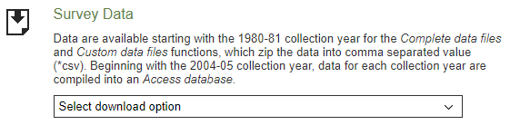
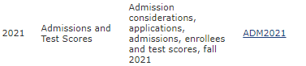
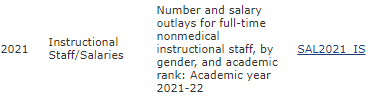
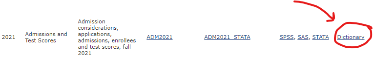

library(tidyverse)
library(ggplot2)19 Finding and Merging Data Online
An Example with IPEDS Data
19.1 Datasets Posted on the Web
This handout provides a walk-through of downloading publicly available datasets from the web and merging them together. No guide can cover all cases, but this example should give you a sense of what to look for/think about when wrangling data posted on websites. Note that this is not about scraping. What we’re considering here are datasets posted for download, often - but not always - found on government sites.
19.2 IPEDS
This example uses data from IPEDS, the Integrated Postsecondary Education Data System. These data are made available by NCES, the National Center for Education Statistics, a great place to start looking for education-related data in the US. The data represent a set of surveys, conducted every year, of all colleges, universities, and other post-secondary institutions that take federal student aide money (which is like, many of them). Data are available going back to 1986 (some scattered earlier years also have data). The surveys cover enrollments, graduation rates, prices, and many other things.
There are 12 total survey components that cover 9 major topics:
Academic Libraries
Admissions
Completions
Enrollment (Fall and 12-Month)
Finance
Graduation Rates and Outcome Measures
Human Resources
Institutional Characteristics
Student Financial Aid
It’s worth noting that some info is only collected every other year. In addition, the data are not consistent over time. New survey items get added. Old items get dropped. Definitions change. Identifying codes, like the Classification of Instructional Program (CIP) codes or the Standard Occupational Classification (SOC), are periodically reviewed and updated. Being aware of (and dealing with) these issues is part of our job as data scientists. When you’re working with new data, take some time to identify these kinds of challenges before you dig too deeply into analysis.
19.3 Finding IPEDS Data
The landing page for IPEDS is here. When you open the page, you’ll see many links. NCES provides a lot of information about their data (and different ways to access it). Sorting through surfeits of info like this is often the biggest challenge of working with public data sources. My description of IPEDS (in the above section) came from digging around these links.1
On the IPEDS page, there’s a link to their data explorer. When you hit this page, you’ll see links to the most recently released surveys. You can filter the datasets by year or by which of the 12 survey components you’re interested in. These data are aggregated, but it’s a good way to get a sense of what information is available in the individual survey components.
To get the survey data, look for this section of the landing page:

In the dropdown menu, select “Complete Data Files”. This will take you to a page with download links for each survey component. The files we want are found in the “Data File” column. Let’s download this admissions and test scores file,

When we download the file, we should put it in a folder on our computer that’s dedicated to this project. That’ll make things easier once we start writing code. On my laptop, I’ve made a folder called “ipeds_handout”. Inside that folder, I made another folder called “data”. I put the downloaded file into that “data” folder. When I start writing code, I’ll store it in the parent folder (“ipeds_handout”).
The downloaded file is a zipped csv. We know how to work with a csv in R, but before we can do that, we have to unzip the file. If you haven’t done this before, here’s a page that walks through how to unzip files on PC or Mac. Once you have the unzipped csv, you can delete the original zip file to tidy things up.
While we’re at it, let’s grab one more file, data on instructional staff salaries,

Like before, unzip the file and put the csv in a project-specific folder.2 You should also download and unzip the dictionary files for both datasets.

The dictionaries contain codebooks that explain what each variable and value in the dataset means. These usually aren’t big files, so we can open and browse them directly in Excel. I’m going to use them soon to figure out how to find the information I’m interested in.
Now we’re ready to get started.
19.4 Our Example Case
Let’s start by loading our libraries and data.
admit <- read_csv('data/adm2021.csv')Rows: 1981 Columns: 68
── Column specification ────────────────────────────────────────────────────────
Delimiter: ","
chr (29): XAPPLCN, XAPPLCNM, XAPPLCNW, XADMSSN, XADMSSNM, XADMSSNW, XENRLT, ...
dbl (39): UNITID, ADMCON1, ADMCON2, ADMCON3, ADMCON4, ADMCON5, ADMCON6, ADMC...
ℹ Use `spec()` to retrieve the full column specification for this data.
ℹ Specify the column types or set `show_col_types = FALSE` to quiet this message.sal <- read_csv('data/sal2021_is.csv')Rows: 15382 Columns: 110
── Column specification ────────────────────────────────────────────────────────
Delimiter: ","
chr (54): XSAINSTT, XSAINSTM, XSAINSTW, XSA_9MCT, XSA_9MCM, XSA_9MCW, XSATOT...
dbl (56): UNITID, ARANK, SAINSTT, SAINSTM, SAINSTW, SA_9MCT, SA_9MCM, SA_9MC...
ℹ Use `spec()` to retrieve the full column specification for this data.
ℹ Specify the column types or set `show_col_types = FALSE` to quiet this message.With the datasets we’ve downloaded, we can explore the relationship between assistant professor salaries and the math ability of incoming Freshmen. To begin, we narrow down each dataset to the variables of interest. To identify these, I looked at the dictionaries we downloaded from IPEDS.
# Keep only school IDs and average salary for 9-month
# Contract instructors
sal <- sal %>% filter(ARANK==3) %>%
# The dictionary tells us that these are assistant profs
select(UNITID, SA09MAT)# Keep school Ids, # of applicants, % that submit SATs,
# and 75th pctile of SAT scores
admit <- admit %>% select(UNITID, APPLCN, SATPCT, SATMT75)In other cases, you might have to do much more cleaning before you merge these datasets together. In general, the process will be to clean each dataset so they can be easily merged. (Of course, more data cleaning may be necessary, post-merge.)
19.4.1 Merging the Admissions and Salary Data
It’s a good idea to do a full join. This will keep all rows from both datasets and allow us to explore which rows did and did not match, post-merge. That said, I often start with a left or right join just as a quick check of how many records match.
df <- left_join(sal, admit, by='UNITID')
sum(is.na(df$SATPCT)) [1] 1298About half (around 1,300 institutions) don’t have a match. This should be explored. Maybe it’s from particular types of institutions (e.g. Vocational/Technical Schools). We might have to merge in additional data to explore the matching behavior. We might figure it out by reading carefully through the dictionaries or other documentation on IPEDS. You can take these steps by following the framework laid out above.
For now, we can run a preliminary regression and call it a day.
# First let's mean-center both variables
df <- df %>% mutate(across(c(SA09MAT, SATMT75), ~.x-mean(.x, na.rm=TRUE)))
summary(lm(SA09MAT ~ SATMT75, df))
Call:
lm(formula = SA09MAT ~ SATMT75, data = df)
Residuals:
Min 1Q Median 3Q Max
-49118 -8410 -889 8346 52056
Coefficients:
Estimate Std. Error t value Pr(>|t|)
(Intercept) 2829.703 459.431 6.159 1.18e-09 ***
SATMT75 164.646 6.186 26.616 < 2e-16 ***
---
Signif. codes: 0 '***' 0.001 '**' 0.01 '*' 0.05 '.' 0.1 ' ' 1
Residual standard error: 12740 on 771 degrees of freedom
(1529 observations deleted due to missingness)
Multiple R-squared: 0.4788, Adjusted R-squared: 0.4782
F-statistic: 708.4 on 1 and 771 DF, p-value: < 2.2e-16It looks like assistant professors make more at schools with higher SAT math scores (as measured by the 75th percentile of the distribution). Assistant profs at schools with 100 points higher scores earn about 10k more on average. There are lots of reasons we shouldn’t put much weight on this result. Lots of rows didn’t merge. We haven’t investigated missingness in the data. But the above steps walk through the process of a first, rough-cut analysis with IPEDS data.
Along the way, I encountered some broken pages, like this link to the IPEDS data release calendar. Maybe they’ll fix it, but you can often find the information you need on some other page. When that doesn’t work, ask someone who’s familiar with the data. When that doesn’t work, you can email someone who works for the agency responsible for the data. In my experience, people get back to you reasonably quickly and are happy to be helpful, as long as you write politely to them.↩︎
To be clear, this should be the same folder as the first dataset. Also, if you’re working with many datasets for a project, it’s a good idea to rename them at this stage. Give the datasets clear, descriptive names so you know what they contain. This will make it easier to write and read code later.↩︎